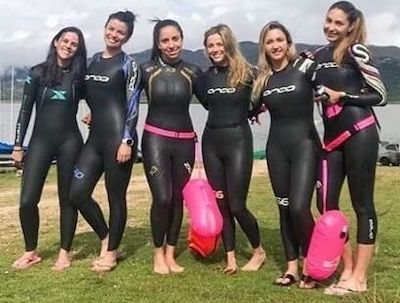
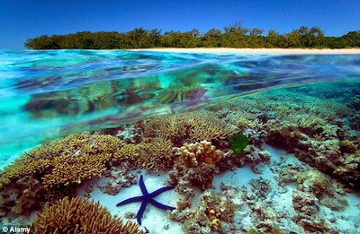
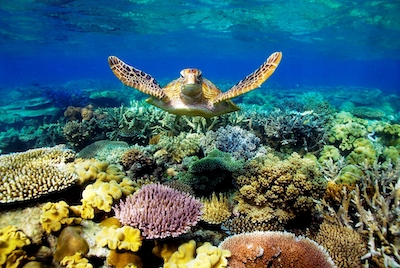
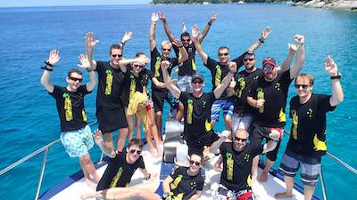

In an effort to create awareness regarding the depletion of healthy coral along the Great Barrier Reef, we organize tours of individuals who use their vacation time to make a difference.
Our mission is to:
If this is a vacation you would like to take, we would love for you to be a part of our mission. Come and spend as little or as much time with us as you'd like. Our ocean friends would love for you to come and help them out!
Please see below for our Package List including Certifications, Locations and services; Dates of Tours.
Each day we take a maximum of 20 experienced individuals, in 5 groups of 4, to work on the GBR. Volunteers must be experienced with not less than an PDI Open Water Rating.
The advantage to volunteering with OWSI is that you come on our expedition for free. The consequence is that you'll have to work. The government of Australia covers the majority of our costs. The rest is up to private philanthopic donations.
Should you or anyone you know feel inclined to donate to our cause, please click on this link to our donations page.
To reserve your spot on one of our expeditions, please contact us via our email address here.
Expeditions take place Monday, Wednesday, Thursday and Saturday from 7am to 8pm.
To better accommodate your choices, let us know your two best preferred dates. One of our staff will reply within 24 hours. Please do not request an expedition time within 48 hours of estimated departure day.
Our friendly Staff

Our office.

Our clients.

Friends of the ocean (like you!).
